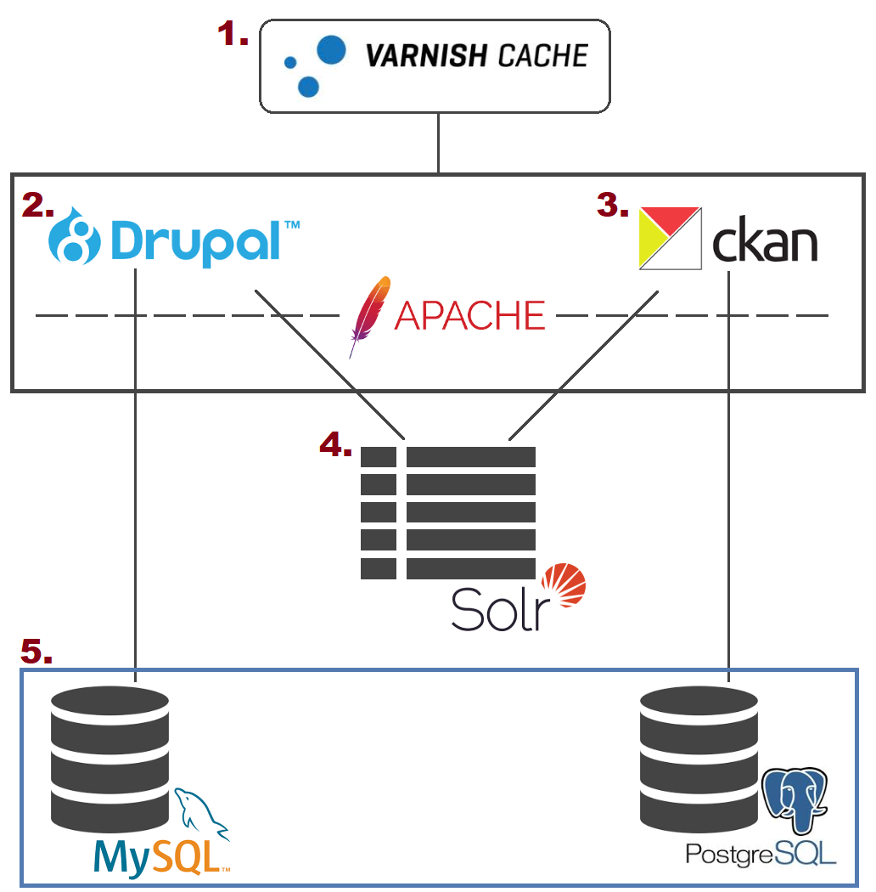

Datos Abiertos
La línea de actuación de Datos Abiertos dentro del proyecto Ciudades Abiertas se centra en la gestión de datos únicos compartidos, abiertos por defecto, georreferenciados y semánticamente anotados por parte de la ciudad. En este sentido, para la publicación de datos abiertos, se configura un sistema formado por una API REST que permite operaciones de lectura y escritura sobre datos individuales, un punto de acceso SPARQL que posibilita realizar consultas complejas sobre varios conjuntos de datos a la vez y un servicio de indexación y búsqueda que facilita la creación de aplicaciones en las que haya que realizar filtrados e interactuar con los datos.
Objetivos
El objetivo de este componente es proporcionar los medios técnicos y conceptuales necesarios para que los Ayuntamientos puedan realizar una gestión y publicación de datos abiertos. Con estas herramientas los Ayuntamientos serán capaces de diseñar sus conjuntos de datos abiertos, gestionarlos y publicarlos de manera que puedan ser aprovechados por todos los sectores de la sociedad (ciudadanía, empresas y administraciones públicas).
Actuaciones
Dentro de la línea de actuación de Datos Abiertos se desarrollan una serie de actuaciones concretas dentro del proyecto.
-
Desarrollo API REST de Datos Reutilizable
El objetivo de este componente es la publicación de una API REST de datos genérica, a partir del desarrollo software que se encuentra desplegado y en producción en Zaragoza, que permita su reutilización tanto en los contextos tecnológicos del resto de los Ayuntamientos participantes como en otras ciudades u organismos. De esta forma se posibilita que otros organismos puedan implantar de forma sencilla un sistema de gestión y publicación de datos abiertos.
-
Despliegue del Portal Datos Abiertos de Santiago de Compostela
El objetivo de esta actuación es la puesta en marcha de un portal de datos abiertos, en concreto el de Santiago de Compostela que permitirá la publicación de los datos municipales y facilitará el acceso y la reutilización de los datos por terceros (ciudadanos y empresas), su estructura puede servir de modelo o referencia para ayuntamientos que pretenden poner en marcha su propio portal de datos abiertos.
-
Infraestructura Tecnológica para la Publicación de Datos Abiertos
El objetivo de esta actuación es la realización de una propuesta específica de Infraestructura Tecnológica de Datos Abiertos para los Ayuntamientos de A Coruña, Madrid y Santiago de Compostela, que permita la gestión y publicación efectiva de datos abiertos.
Como eje vertebrador de esta actuación se pretende consensuar la definición de una API común para la publicación de datos abiertos que facilite la posterior explotación de los datos publicados. Se proporcionará la implementación de una arquitectura de referencia para la implantación de esta API, teniendo en cuenta los componentes software que se encuentran en producción en la API que ofrece actualmente el Ayuntamiento de Zaragoza: la API REST, el punto de acceso SPARQL y el servicio de indexación y búsqueda.
Qué buscamos
- Crear una API REST de datos abiertos: se publicará y documentará el código necesario para la publicación de una API REST de datos abiertos.
- Adaptar bases de datos y anotaciones: se transformarán fuentes de datos procedentes de diversos formatos para su carga en bases de datos relacionales, utilizando el gestor de bases de datos de cada ciudad, y se crearán vistas unificadas que permitan la reutilización de las anotaciones hechas para cada uno de los conjuntos de datos.
- Adaptar procesos de carga e indexación de datos: se adaptarán en un sistema gestor de tripletas RDF para aquellos conjuntos de datos que se hagan disponibles en el punto de acceso SPARQL, y se indexarán para facilitar su búsqueda.
- Adaptar APIs a los catálogos existentes y a la API de CKAN: se realizarán los desarrollos que permitan que los catálogos de datos estén disponibles utilizando la API de CKAN, lo que facilitará su federación en datos.gob.es así como en otros portales agregadores.
Dentro del proyecto Ciudades Abiertas se ha puesto en marcha el Portal de Datos Abiertos de Santiago de Compostela que permitirá la publicación de los datos municipales y facilitará el acceso y la reutilización de los datos por terceros (ciudadanos y empresas). Su estructura, detallada a continuación, puede servir de modelo o referencia para ayuntamientos que pretendan poner en marcha su propio portal de datos abiertos.
Tecnología
La tecnología utilizada en el Portal de Datos Abiertos de Santiago de Compostela se basa en una arquitectura Open Source que combina diferentes componentes para cubrir las necesidades funcionales del proyecto. La plataforma integra principalmente una herramienta de gestión de conjuntos de datos basada en CKAN y un gestor de contenidos en Drupal.
Diagrama de arquitectura
A continuación se puede observar un diagrama de arquitectura de alto nivel y una breve descripción de cada una de las capas.

-
Proxy inverso: a través de Varnish se gestiona el enrutamiento a los gestores.
-
Portal de contenidos: desarrollado sobre el gestor de contenidos Drupal; gestiona el contenido editorial del proyecto.
-
Catálogo de datos: implementado sobre CKAN; contiene el repositorio único de metadatos.
-
Motor de indexación: implementado sobre Apache Solr; provee de capacidades de búsqueda tanto para el portal de contenidos como para el catálogo de datos.
-
Capa de persistencia: repositorio de datos para el portal de contenidos y el catálogo de datos; implementado en MySQL y PostgreSQL.
Código fuente
El código fuente del proyecto está disponible en GitHub. Se han publicado todas las extensiones desarrolladas para CKAN, así como los módulos contrib, features y theme de Drupal.
Para cualquier consulta acerca de la tecnología de la plataforma, puede ponerse en contacto con nosotros a través del punto de contacto.